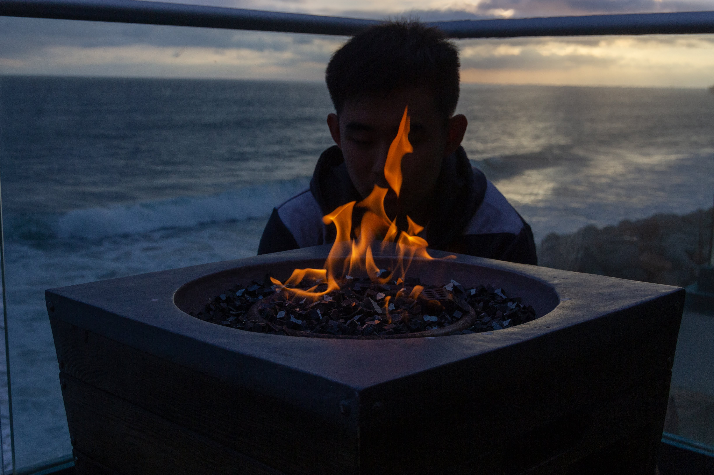
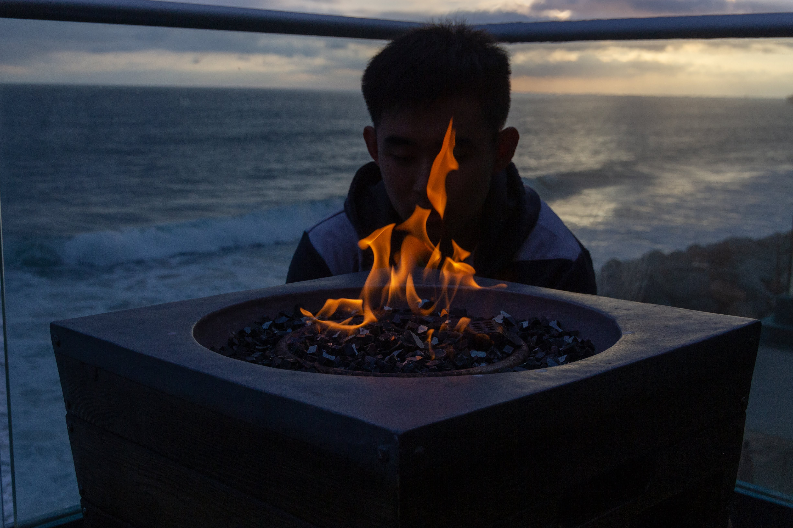

Welcome
Welcome to my website! I'm Melba!
I'm currently a junior at Caltech (Class of 2022) studying computer science. I'm interested in understanding how things work and sharing my understanding with others. Take a look at my experience below, and feel free to reach out!
- Designed MVP of web app to analyze user’s PCAP files and visualize trends in full stack project
- Iterated through production cycle, using user feedback to validate features and identify bottlenecks
- Created database to store, parse, and analyze users’ uploaded packet information
- Built UI/UX design to enable file uploads and display aggregated visualizations and statistics
- Preprocessed and visualized JHU COVID-19 data with Jupyter notebook and Python seaborn library
- Predicted increase in deaths per day per county in the US 2 weeks ahead of present data
- Fitted sklearn and LSTM neural net models to data with a prediction of .0712 pinball loss score
- Pioneered, implemented, and deployed change review process automation for SRE teams
- Tested features with SRE teams and incorporated Jira API, Slack webhooks into Python interface
- Automated creation of Jira tickets and saved 100+ hours of manual labor every week for engineers
- Managed agile team of SRE and SWE interns through a 3-month design/build/test process
- Processed Multi-angle Imaging Spectro Radiometer (MISR) satellite images for section use
- Designed and promoted two quiz programs explaining applications of MISR images
- Received over 3000 unique submissions in one-week window after marketing partnerships
- Educated general public about MISR imaging and applications for JPL outreach events
Packet Data
Click the button below to get packet info:
Blog
See more of my blog posts here!Outside of school, I try to keep up a variety of hobbies and interests, which I'll reflect upon on my blog. Some of these interest include music—I play piano, violin, and used to sing in a choir; reading—I'm interested in sci-fi, fantasy, and novels, as well as an avid reader of email subscription mail chains (like Morning Brew, the Daily Skimm), and, if I have time, long form journalism; and true crime, most of which I find through Youtube videos and channels.
Though a lot of my interests are mostly for personal entertainment, sometimes I write about them too! There are various places and medium through which I write, including Medium (see the link in the navigation bar), my old Blogspot website, and my personal journal. The latter two locations are mostly just archives because they're older (and embarrassing). Check out my Medium account for my most recent writing.
I also like to travel, too! I've been to a few countries outside of the US—including Mexico, Canada, Vietnam—but between school and learning, I haven't been anywhere recently (and I don't think I will be traveling anytime in the future, either). So to remedy that, I like to watch a lot of travel vlogs and peruse vacation blogs. Recently, I've been watching a lot of vlogs about Korea (I'd really want to visit Seoul!), Japan, and Taiwan. Hopefully I'll have the chance to go sometime in the future!
Take a listen to an album I like below!
Sleep Chart
One of my favorite products is my Fitbit. I primarily use it to track my sleeping patterns, and mostly look at how much sleep (in minutes) I get per evening. This number flucuates a lot, as you can see below. To get my Fitbit data, I followed this walkthrough.
Projects
See more of my projects here!A lot of my projects are based on techniques or models learned from classes taken in school. This includes prediction models from machine learning classes, data structure implementations, and modelling engines. Most of my technical projects for CS courses are written in some combination of Python, Java, or C. Outside of school I've also completed a few projects for internships. This includes my work from Everbridge and UCSD. To see these projects in their entirety, check my Github in the navigation bar on the left!
In addition to technical projects, I'm also interested in design and user interfaces. This summer I hope to complete a few case studies on products that I use daily: I've been an iPhone user ever since I got my first smartphone, and my friends and I have a few ideas as to how the iMessaging interface could be improved (ideas we thought of prior to the Apple keynote in June 2020); and Youtube as well (where I watch all of my travel vlogs!).
Check my Schedule
July
| Mo | Tu | We | Th | Fr | Sa | Su |
| 26 | 27 | 28 | 29 | 30 | 31 | 1 |
| 2 | 3 | 4 | 5 | 6 | 7 | 8 |
| 9 | 10 | 11 | 12 | 13 | 14 | 15 |
| 16 | 17 | 18 | 19 | 20 | 21 | 22 |
| 23 | 24 | 25 | 26 | 27 | 28 | 29 |
| 30 | 1 | 2 | 3 | 4 | 5 | 6 |
Photos
See more of my photos here!I started taking photos for fun in middle school and like to play around with edits and filters now. My favorite things to photograph are friends and family. The photos below are from various trips that I've been on with me and my friends: the beach trip was from a trip to Oceanside, California last spring; the ski trip was a trip we took to Mammoth Mountain last winter (where we skiied a lot!); and the last set of photos is from an Interhouse party at Caltech ("Ravery") that was night market themed. These photos are a sample selection from my portfolio; take a look at the photgraphy page above to see more!
Beach Trip

 

Ski Trip


Ravery